Note
Go to the end to download the full example code.
slopeplot¶
Create slope plots for visualizing changes between conditions.
Slope plots (also called slopegraphs) show how values change between two or more conditions, making them ideal for paired data comparisons and before/after analyses.
Load packages¶
import numpy as np
import pandas as pd
import seaborn as sns
import cnsplots as cns
tips = sns.load_dataset("tips")
Generate sample data¶
Create paired measurements across conditions.
np.random.seed(2023)
data = np.concatenate(
[
[np.random.normal(loc=1, size=15), 15 * ["site1"], 15 * ["healthy"]],
[np.random.normal(loc=3, size=15), 15 * ["site2"], 15 * ["healthy"]],
[np.random.normal(loc=0, size=15), 15 * ["site3"], 15 * ["healthy"]],
[np.random.normal(loc=1, size=15), 15 * ["site1"], 15 * ["disease"]],
[np.random.normal(loc=1, size=15), 15 * ["site2"], 15 * ["disease"]],
[np.random.normal(loc=3, size=15), 15 * ["site3"], 15 * ["disease"]],
],
axis=1,
)
data = pd.DataFrame(columns=["value", "site", "label"], data=data.T)
data["value"] = data["value"].astype(float)
Basic slopeplot¶
Visualize changes between healthy and disease states.
cns.figure(150, 150)
cns.slopeplot(data=data, x="site", y="value", hue="label")

<Axes: ylabel='value'>
Slopeplot with custom palette¶
Apply different color schemes.
cns.figure(150, 150, "Set1")
cns.slopeplot(data=data, x="site", y="value", hue="label")

<Axes: ylabel='value'>
Tableau palette¶
cns.figure(150, 150, "Tableau")
cns.slopeplot(data=data, x="site", y="value", hue="label")

<Axes: ylabel='value'>
Bold palette¶
cns.figure(150, 150, "Bold")
cns.slopeplot(data=data, x="site", y="value", hue="label")
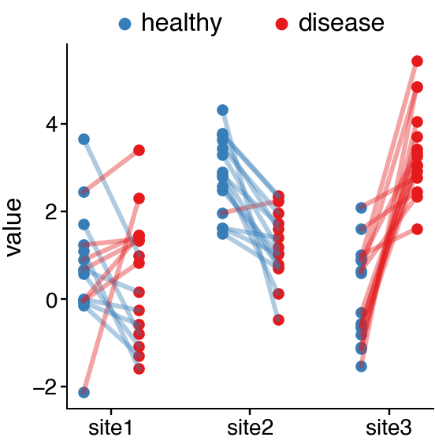
<Axes: ylabel='value'>
Two-site comparison¶
Compare only two sites for cleaner visualization.
data_2sites = data[data["site"].isin(["site1", "site2"])]
cns.figure(120, 150)
cns.slopeplot(data=data_2sites, x="site", y="value", hue="label")
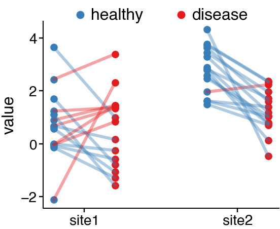
<Axes: ylabel='value'>
Treatment response data¶
Simulate before/after treatment measurements.
np.random.seed(42)
n_patients = 20
treatment_data = pd.DataFrame(
{
"patient": list(range(n_patients)) * 2,
"timepoint": ["Before"] * n_patients + ["After"] * n_patients,
"value": np.concatenate(
[
np.random.normal(50, 10, n_patients),
np.random.normal(35, 12, n_patients),
]
),
"responder": (["Yes"] * 12 + ["No"] * 8) * 2,
}
)
cns.figure(120, 150)
ax = cns.slopeplot(data=treatment_data, x="patient", y="value", hue="timepoint")
ax.set_title("Treatment Response")
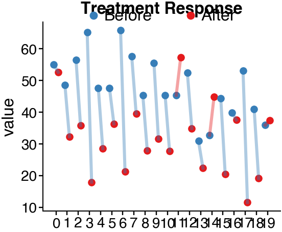
Text(0.5, 1.0, 'Treatment Response')
Gene expression changes¶
Show expression changes across conditions.
np.random.seed(42)
genes = ["TP53", "BRCA1", "MYC", "EGFR"]
gene_data = []
for gene in genes:
baseline = np.random.normal(5, 1, 10)
treated = baseline + np.random.normal(1.5, 0.5, 10)
for i, (b, t) in enumerate(zip(baseline, treated)):
gene_data.append(
{"sample": i, "condition": "Control", "expression": b, "gene": gene}
)
gene_data.append(
{"sample": i, "condition": "Treatment", "expression": t, "gene": gene}
)
gene_df = pd.DataFrame(gene_data)
gene_df_tp53 = gene_df[gene_df["gene"] == "TP53"]
cns.figure(120, 150)
ax = cns.slopeplot(data=gene_df_tp53, x="sample", y="expression", hue="condition")
ax.set_title("TP53 Expression")
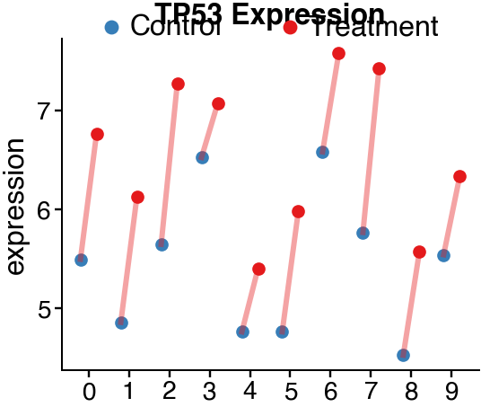
Text(0.5, 1.0, 'TP53 Expression')
Multiple genes comparison¶
Compare expression changes for multiple genes.
cns.figure(150, 150)
ax = cns.slopeplot(data=gene_df, x="condition", y="expression", hue="gene")
ax.set_title("Gene Expression Changes")
cns.take_legend_out()
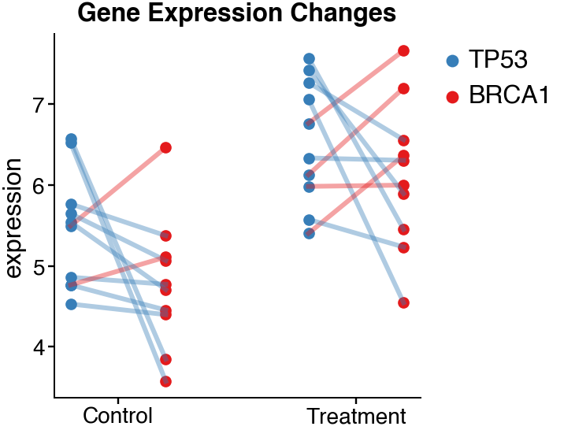
Time series slopeplot¶
Track changes across multiple time points.
np.random.seed(42)
time_data = []
subjects = list(range(8))
timepoints = ["Day 0", "Day 7", "Day 14"]
for subj in subjects:
base = np.random.normal(100, 20)
group = "Treatment" if subj < 4 else "Control"
for i, tp in enumerate(timepoints):
if group == "Treatment":
val = base + i * np.random.normal(15, 3)
else:
val = base + i * np.random.normal(2, 2)
time_data.append(
{"subject": subj, "timepoint": tp, "value": val, "group": group}
)
time_df = pd.DataFrame(time_data)
cns.figure(180, 150)
ax = cns.slopeplot(data=time_df, x="timepoint", y="value", hue="group")
ax.set_title("Time Course")
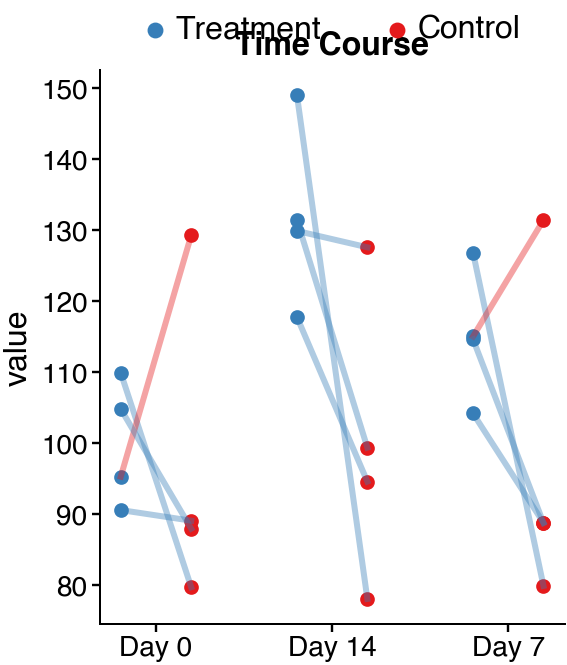
Text(0.5, 1.0, 'Time Course')
Wider figure for more timepoints¶
cns.figure(220, 150)
ax = cns.slopeplot(data=time_df, x="timepoint", y="value", hue="group")
ax.set_title("Time Course (Wide)")
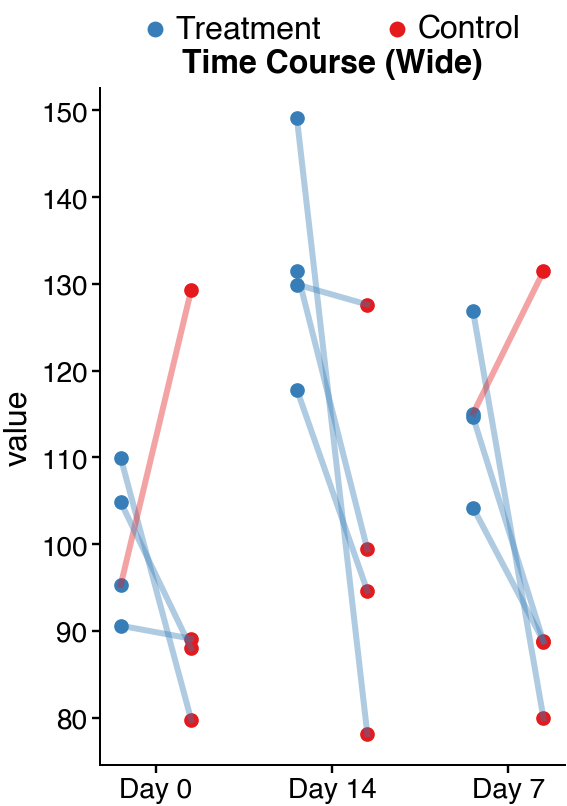
Text(0.5, 1.0, 'Time Course (Wide)')
Paired patient data¶
Compare matched samples (e.g., tumor vs normal).
np.random.seed(42)
n_pairs = 15
paired_data = pd.DataFrame(
{
"patient": list(range(n_pairs)) * 2,
"tissue": ["Normal"] * n_pairs + ["Tumor"] * n_pairs,
"expression": np.concatenate(
[
np.random.normal(3, 0.8, n_pairs),
np.random.normal(6, 1.2, n_pairs),
]
),
"stage": (["Early"] * 8 + ["Late"] * 7) * 2,
}
)
cns.figure(120, 150)
ax = cns.slopeplot(data=paired_data, x="patient", y="expression", hue="tissue")
ax.set_title("Tumor vs Normal")
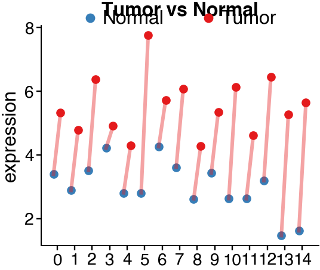
Text(0.5, 1.0, 'Tumor vs Normal')
Comparing conditions with multipanel¶
Side-by-side slope plots for different analyses.
mp = cns.multipanel(max_width=350)
# Early stage
early = paired_data[paired_data["stage"] == "Early"]
mp.panel("A", 120, 100)
cns.slopeplot(data=early, x="patient", y="expression", hue="tissue")
mp.get_axes("A").legend().remove()
mp.get_axes("A").set_title("Early Stage")
# Late stage
late = paired_data[paired_data["stage"] == "Late"]
mp.panel("B", 120, 100)
cns.slopeplot(data=late, x="patient", y="expression", hue="tissue")
mp.get_axes("B").legend().remove()
mp.get_axes("B").set_title("Late Stage")
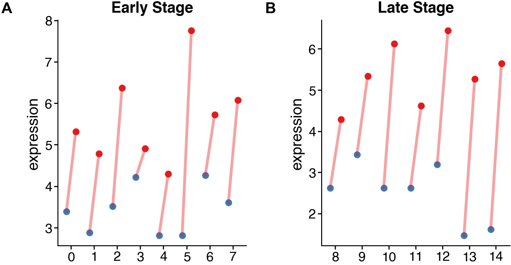
Text(0.5, 1.0, 'Late Stage')
Drug response across sites¶
Compare drug responses at different anatomical sites.
np.random.seed(42)
sites = ["Liver", "Lung", "Brain"]
drug_data = []
for site in sites:
for i in range(10):
baseline = np.random.normal(100, 15)
response = baseline * np.random.uniform(0.5, 1.2)
drug_data.append(
{
"sample": f"{site}_{i}",
"condition": "Baseline",
"value": baseline,
"site": site,
}
)
drug_data.append(
{
"sample": f"{site}_{i}",
"condition": "Treatment",
"value": response,
"site": site,
}
)
drug_df = pd.DataFrame(drug_data)
cns.figure(150, 150)
ax = cns.slopeplot(data=drug_df, x="condition", y="value", hue="site")
ax.set_title("Drug Response by Site")
cns.take_legend_out()
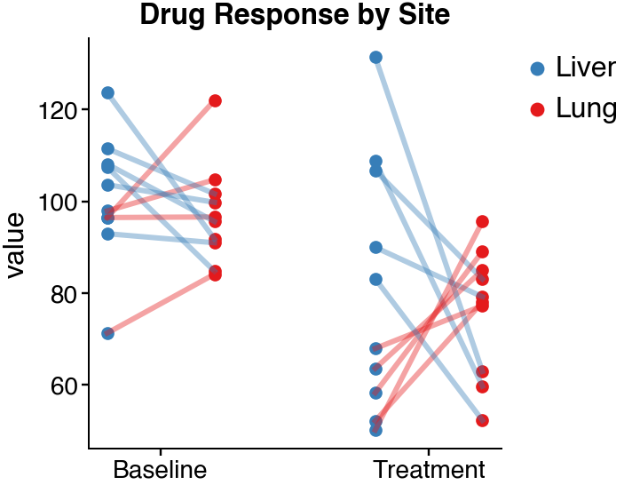
Slopeplot with different palettes comparison¶
mp = cns.multipanel(max_width=450)
mp.panel("A", 120, 100, color_cycle="Set1")
cns.slopeplot(data=data_2sites, x="site", y="value", hue="label")
mp.get_axes("A").legend().remove()
mp.get_axes("A").set_title("Set1")
mp.panel("B", 120, 100, color_cycle="Tableau")
cns.slopeplot(data=data_2sites, x="site", y="value", hue="label")
mp.get_axes("B").legend().remove()
mp.get_axes("B").set_title("Tableau")
mp.panel("C", 120, 100, color_cycle="Bold")
cns.slopeplot(data=data_2sites, x="site", y="value", hue="label")
mp.get_axes("C").legend().remove()
mp.get_axes("C").set_title("Bold")
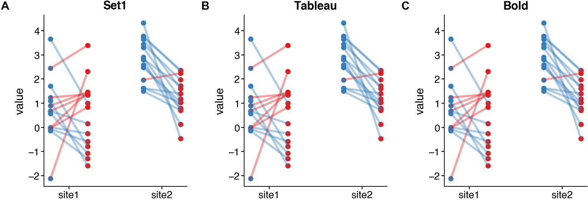
Text(0.5, 1.0, 'Bold')
Total running time of the script: (0 minutes 1.103 seconds)